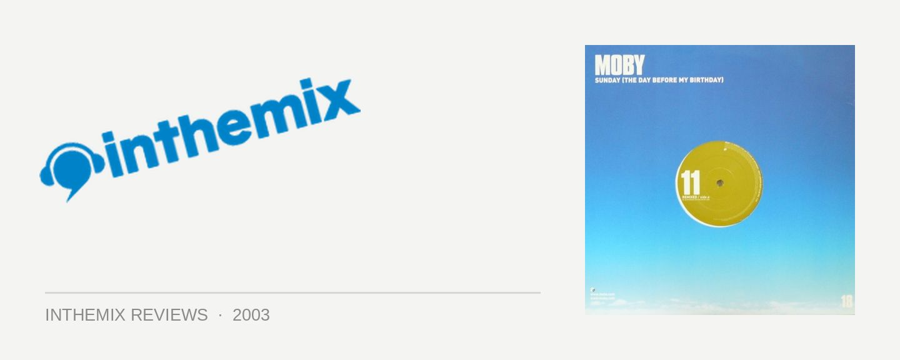

Moby - Sunday (The Day Before My Birthday)
(Virgin/EMI)
It’s no secret that Moby’s album Play was an absolute massive hit around the world, selling well over 10 million copies since its release in 1999. A highly original melding of classic gospel, R & B and soul with contemporary dance, the album undeniably struck a chord in the musical mass consciousness, with the tracks licensed in countless adverts, promotions, movies, and whatever else you could imagine. In a distinctly similar vein, last year’s album 18 has also enjoyed similar success, and Sunday (The Day Before My Birthday) is the latest single to be lifted from it, in commemoration of Moby’s recent tour of Australia.
Sunday (The Day Before My Birthday) is a typical piece of Moby pop, with a bluesy feel and dreamy female vocals, a laid-back drumbeat and floaty strings. The fact is that the song is almost indistinguishable from all of the Moby tunes that you’ve been hearing in advertisements over the last couple of years, and could have easily been taken straight out of Play. Whether this is a positive or a negative remains up to the listener, and Sunday remains a charming little ditty regardless. The radio mix is accompanied by a rather uninspiring club mix, which does little more than drop a house beat over the top; on the other hand the Boris Dlugosch & Michi Lange Headbanger Session mix offers a more quirky take on the original.
The surprise b-side of the single for me was Ferry Corsten’s mix of another one of Moby’s songs, In My Heart. While I wasn’t exactly enthused by the idea of an uplifting trance remix of a Moby song, Corsten makes great use of the original soulful vocal, laying it over a euphoric trance synth-line, breaking it down and building it back up beautifully. While it may be nothing spectacularly new to the ears it does the job nonetheless, and for someone who consistently spits out so many huge club tunes, it astounds me that Ferry Corsten can continually come up with such fresh ideas.
Although 18 has been mildly criticised by some for not really distinguishing itself from Play, it nonetheless remains a more than worthwhile purchase, and the same goes for Sunday. A recommended choice for those who just can’t get enough of Moby’s melancholic rhythm-and-soul tinged, unique take on dance music.